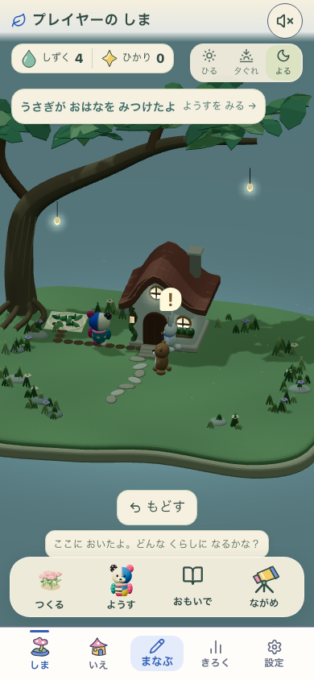
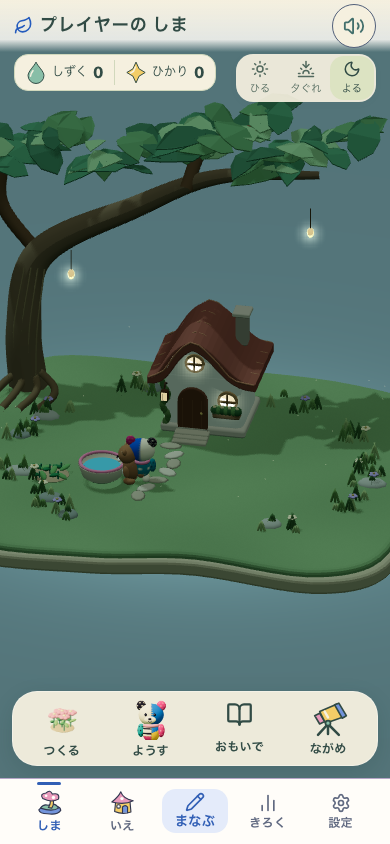

学ぶ → 庭 → 仲間 → 家 → 同じ学習
実アプリを操作して撮影した記録です。3問で得たしずくで花と水ばちを置き、ぽこもこを呼び、カワウソを招待。庭と家は同じ所有物と昼・夕・夜を表示します。
対象：http://127.0.0.1:5400 / 保存21 / living-fantasy-garden-v2 / 家 garden-house-continuity-v1。端末実機・子どもの評価は未実施。
Build: development-local:0275c14b-33b6-411c-9685-0e74bd96a8d7
App inputs: 8077a3909579acd5594a9811a1887eff20522c69713437817e687c143f3e3f74
元のぽこもこと庭の系統を保つ

従来のv2・保持する基準
今回の実画面・夜